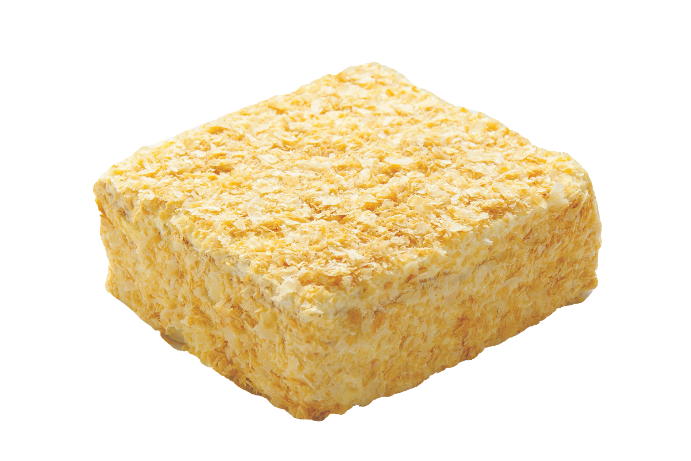

Торт
"Наполеон" листковий
"Наполеон" листковий
Склад: Борошно пшениче вищого гатунку, цукор білий, сода харчова, яйця курячі, ванілін, масло селянське
маргарин, лимонна кислота харчова.
Поживна (харчова) цінність на 100г продукту: (Білки: 5.0г, жири: 24.3г, вугливоди:42.7г)
Енергетична цінність (калорійність) на 100г продукту: 382Ккал(1598кДж)).

Виробник ПП "Цурцумія М" м.Житомир вул.Сірка 8 Тел: 380974647808
Строк придатності 120 годин
ДСТУ:4803:2013